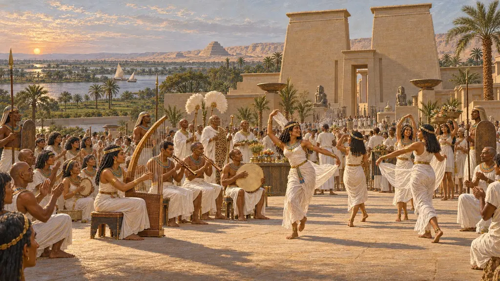
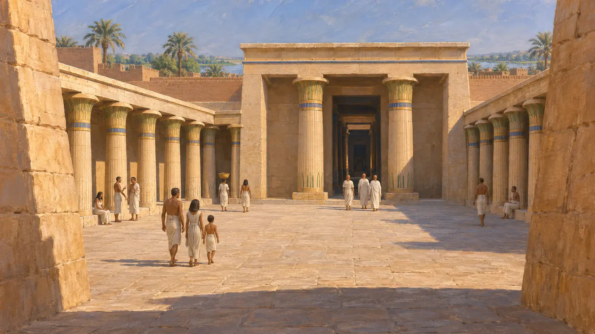
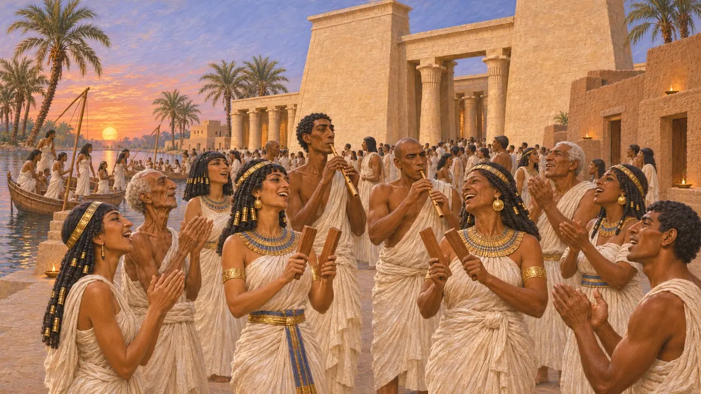
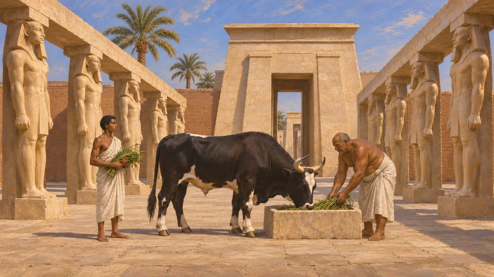
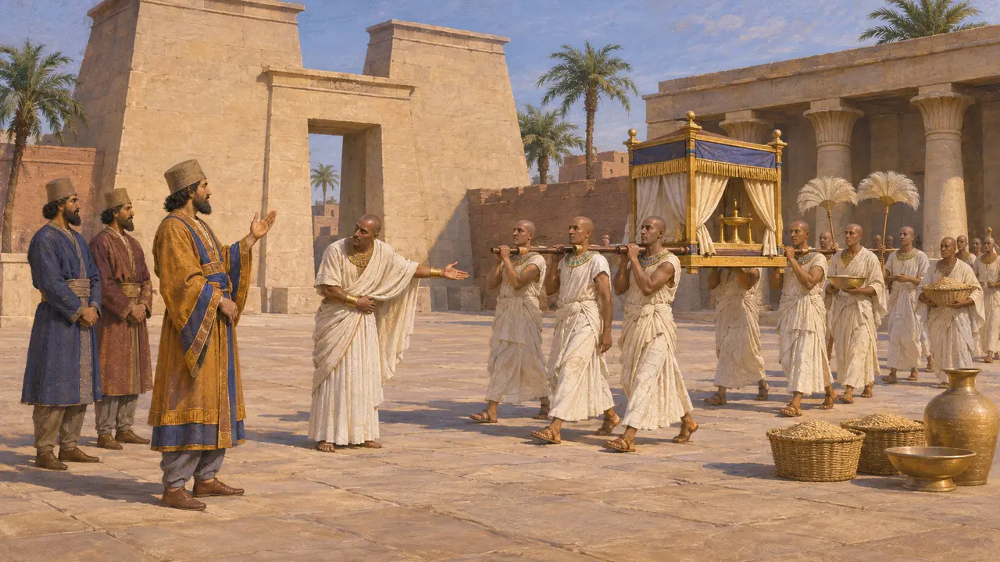
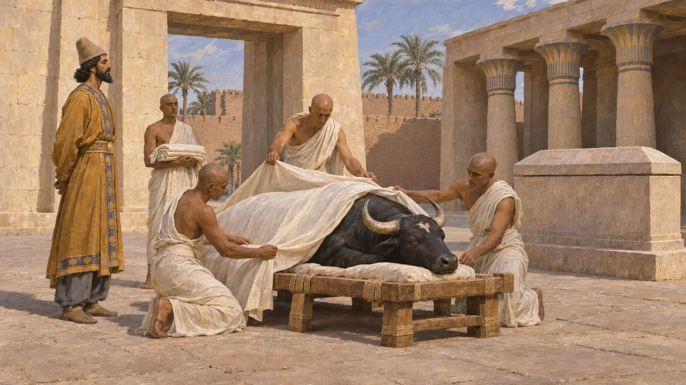

Tempelvorhof
Offener Hof eines ägyptischen Tempels, Memphis, um 525 v. Chr.
Ein ägyptischer Tempel war als Abfolge von Räumen angelegt, die zum Schrein des Gottes hin immer abgeschiedener wurden. Im Vorhof hinter dem großen Tor kamen die meisten Gläubigen dem Gott am nächsten; hier versammelten sich die Festmengen, und von hier brachen die Prozessionen auf. In Memphis gehörte der Haupttempel dem Ptah, zu dessen Kult der heilige Apis-Stier zählte.
Im Spiel: Ein in Memphis verfügbares Versorgungsgebäude, beschrieben anhand der Feste Ägyptens. Das Spiel stützt sich auf Herodot, doch die Boots- und Lampenfeste, die er schildert, hatten ihren Mittelpunkt in Bubastis und Sais, nicht in einem Tempelvorhof von Memphis.

Hinter dem Tor der Hof
Zeitgenössisch belegtÄgyptische Tempel öffneten sich durch ein Pylontor zu einem Hof, der oft von Säulen gesäumt war. Dahinter führten Hallen zum dunklen Allerheiligsten, in dem das Bild des Gottes stand. Das einfache Volk durfte offenbar höchstens die äußeren Höfe betreten, während die Priester dem Gott im Inneren dienten. In Mit Rahina, dem Ort des alten Memphis, haben Ausgräber Teile des Ptah-Tempels und das Balsamierungshaus des Apis mit seinen Alabastertischen gefunden.
R. H. Wilkinson, The Complete Temples of Ancient Egypt, 2000

Boote, Gesänge und Lampen
Antiker BerichtHerodot berichtet, die Ägypter hätten jedes Jahr viele Feste gefeiert, und die Griechen hätten die Prozessionen von ihnen übernommen. Er schildert Menschenmengen, die nach Bubastis segelten. Die Frauen schlugen Klappern, die Männer spielten Flöten, während die Übrigen sangen und in die Hände klatschten. Er erzählt auch von einer Nacht in Sais, in der überall in Ägypten Lampen vor den Häusern brannten, und berichtet, dass die Ägypter, wenn ein neuer Apis erschien, ihre besten Kleider anlegten und Festmahle hielten.
Herodotus 2.58-62; Herodotus 3.27

Ein Hof für den Apis
Antiker BerichtHerodot berichtet, Pharao Psammetich I. habe dem Tempel des Ptah, den er Hephaistos nennt, ein südliches Tor hinzugefügt. Gegenüber errichtete er einen Säulenhof, in dem der Apis gehalten und gefüttert wurde, wobei hohe Statuen anstelle von Pfeilern standen. Dieser Hof ist im Gelände bislang nicht sicher nachgewiesen.
Herodotus 2.153

Persische Herrschaft und die Feste
Zeitgenössisch belegtUdjahorresnet war ein ägyptischer Beamter im Dienst von Kambyses und Dareios. Die Inschrift auf seiner Statue berichtet, er habe Kambyses gebeten, Fremde zu entfernen, die sich im Tempel der Neith in Sais niedergelassen hatten. Dem Text zufolge ließ der König den Tempel reinigen, seine Einkünfte wiederherstellen und seine Feste und Prozessionen wie zuvor abhalten. Es ist die Selbstdarstellung eines einzelnen Mannes, doch sie zeigt einen persischen König, der so handelt, wie man es von einem Pharao erwartete.
Statue of Udjahorresnet, Vatican Museums

Der Tod des Apis unter Kambyses
UmstrittenHerodot berichtet, Kambyses habe, erzürnt über das Apisfest, den Stier in den Schenkel gestochen, worauf dieser verendete. Doch eine Stele aus dem Serapeum von Sakkara verzeichnet einen Apis, der im sechsten Regierungsjahr des Kambyses, um 524 v. Chr., mit allen Ehren bestattet wurde, und ein Sarkophag wurde im Namen des Königs geweiht. Viele Historiker halten die Geschichte daher für eine feindselige ägyptische Überlieferung, wenngleich manche einwenden, die Daten ließen dennoch Raum dafür, dass ein Stier verwundet wurde.
Herodotus 3.27-29; Apis stelae from the Serapeum; P. Briant, From Cyrus to Alexander, 2002
Quellen
- Herodotus, Histories, Book 2
- Herodotus, Histories, Book 3
- Statue of Udjahorresnet, Vatican Museums
- Apis stelae from the Serapeum at Saqqara
- P. Briant, From Cyrus to Alexander, 2002
- R. H. Wilkinson, The Complete Temples of Ancient Egypt, 2000